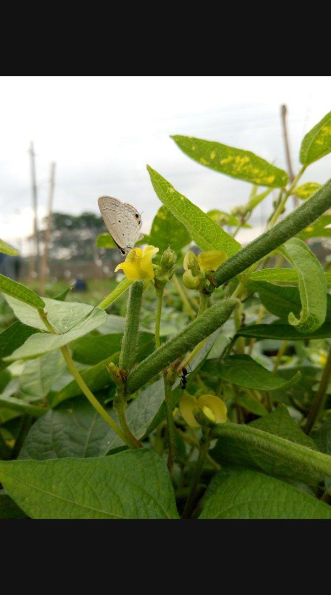

Yield is a complex outcome. Understanding which traits move together helps choose parents and decide what to measure under time pressure.
In our multi-environment work, pods per plant and seed weight often contribute strongly to yield, while very late flowering can clash with terminal stress. Disease and pest scores matter for on-farm relevance even when they only weakly correlate with yield in clean plots.
Use correlation and path-style thinking to prioritise traits in the nursery. Keep the selection index simple enough that the team can explain every weight. Revisit associations when you change locations or seasons.